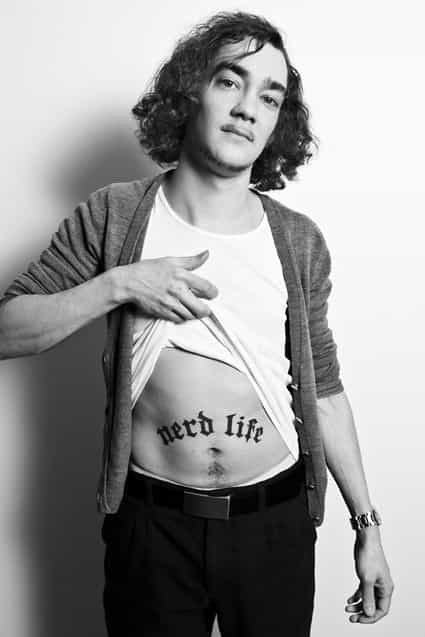

< < < Back
The Battle Over Public Libraries Shows How Sweden Continues To Push A Cultural Marxist Narrative – Return Of Kings
Any ROK reader is painfully aware of the degenerated hypocrisy the average Tumblr feminist or Twitter SJW share to the world. If you live in the Western world today, you do not have to go through the pains of looking at Sweden to find examples of this.
However, a glimpse at Sweden will show you how these people will behave once they come into a position of power and what policies they will implement. A recent debate in Sweden illustrates this perfectly, and should serve as a looking glass into the future.
The Story

The debacle started when Paula Neuding wrote an article on the many reports of disturbances, theft, vandalism, sexual harassment and violence in Swedish libraries. Since I have not been able to read the report myself, I will have to take her word that the situation is deteriorating fast. Many libraries now need to have security guards, something unheard of a few decades ago, and some have chosen to close down complete during nighttime.
The response to this article surprised even a cynic like me. Paula Neuding was accused of being a racist! Apparently the words she used; gangs, beating his cousin for being a “whore,” and youths spreading sunflower seeds did indicate that the majority of the troublemakers were MENA (Middle East or North Africa) immigrants.
Although the debate itself is completely pointless, since as society falls apart, libraries might not be the first priority to save, it does serve a purpose in exposing the progressives for what they are and how their corrupt behavior hurt the very same people they claim to protect.
Silence To Those Who Would Criticize Any Group
The pets of the lefties are always “vulnerable groups.” Society should give extra care for women, immigrants, children and the poor, so the narrative goes. So who are targeted when the libraries collapse in anarchy? Well, the people not rich enough for owning their own library, the kids that need the tranquility of a library to handle school, the immigrants that want to learn Swedish to name a few.
This female refugee from Iran gives testimony that the library was her refuge from both an oppressive home and sexual harassment at school. A good friend of mine, also a refugee, learned Swedish by frequenting his local library as a kid. I myself remember the silent space between the shelves as an oasis of learning and exploration.
Many others that didn’t really fit the clothes of a sport jock or bad boy chose to engage in reading instead. These are the people that are robbed of their sanctuary, and the thieves are the very same leftists that proclaim to be on their saviors. Pimp or SJW, can anyone remind me of the difference now again?
Let’s take a closer look at the people that actually rally to the cause of shaming and silencing anyone addressing the growing chaos in the libraries. I will only include the croaking voices from those in power—the legions of no-name cultural dregs that holler on Twitter and girrrrl power blogs are not included.
The Opponents Of The Silence Norm
Niclas Lindberg, General Secretary of the Library Association, led the first hysterical attack on the racist whistleblower. This is the man that coined the term Silence Norm. In a tweet that reads “Should those that do not fit your norm adapt or stand outside?” he declared that asking visitors to keep the peace in a public library was a forcing them to adopt to a norm.
And as we all know, as soon as something is labeled a norm, it is a bad thing. As the crybaby he is, he later complained that he “had been painted a fool because he objects to the Silence Norm.” So the very man in charge of the organization that proclaims that their mission is to “promote a library system of a high standard, to promote and develop the Swedish Library Act, and to promote libraries as a stronghold for democracy and freedom of expression” is objecting to the “norm” of not vandalizing the premises? Apparently yes.
Niclas Lindberg like his tie and shirt norm.
Gustav Almestad, librarian and columnist on the far left site Politism was the first to cry racist. He claims that with only more resources – read: “taxpayer money” – the libraries would be better places. However, his article in had little impact in any debate to increase the funds, but a lot more so to smear the racist stamp on anyone daring to talk about the troubles.
Preventing an Iranian immigrant from reading is apparently breaking a norm (something we can never have too much of) while telling an Iranian to stop bothering another Iranian is racist.

Gustav Almestad, who uses the handle “rough initiative” shares his tattoo to his friends.
Next up is Sebastian Lönnlöv, librarian, HBTQ activist and author of HBTQ – Books beyond the norm. According to his blog he has recently been though a gender identity investigation and after that something called a gender correction. As a blogger he prefers the name Tekoppen (the Teacup).
Sebastian Lönnlöv claims that the library no longer is a place for only reading, but an important meeting place in society, that also serves a purpose as a place for drunken people to sleep off the booze and homeless to find shelter. He ends his piece by proclaiming that the visitors are allowed to smell bad and be young and wild, since libraries are not for “a fine literary middleclass that want a space for themselves.”
Sebastian Lönnlov, before, after or possibly during his “gender correction.”
I believe that the final stroke that forever will silence any voices that dare to whisper of vandalism or violence in public libraries was dealt by Danjel Nam. Danjel writes for the State Radio and the feminist culture magazine Bang. His fame comes from a series of programs that focus on male Swedish sex tourists in Thailand and an ongoing struggle to stop the norm of racism against East Asian people in Sweden.
Danjel Nam sees racist people.
He released an “alarm” that rightwing extremists disturb the peace in the libraries. In his article he interviews the boy Wasam Jawad, a tender youth of 24. Wasam Jawad explains that he sometimes cause problems because he is too old for the recreation center.
Since he is unemployed and has “nothing to do” he comes to the library. If someone tells him to be quiet, he will do so if they show him enough respect, otherwise he feels like he is “being judged.” Finally Wasam Jawad tells us that he waits for someone to give him support so he can create a football team.
The article ends with a short description of the right wing extremists that threaten the peaceful libraries. Karin Linder, chair of the DIK Association (a union for culture workers) who gives the testimony, is herself very critical of the Swedish Democrats, the nationalist party that in recent polls have garnering 20% of the votes.
Following their suggestion for immigration policy is apparently right wing extremism. Please note that with that standard, all other European nations are right wing extremists, since their policy on immigration is similar to that suggested by the Swedish Democrats.
This is not mentioned in the article, but easily found on her own site, where she urges the Liberals, the Conservatives, the Social Democrats, the Communist Party and the Green party to ally against the Swedish democrats.
Karin Linder strikes a power-pose.
Apparently debates have been held at libraries, and sometimes, someone ask questions that are “hostile towards immigrants.” She describes the situation as threatening. The policy when “racist” questions are asked is to shut down the seminar. Dialogue police are routinely called in to support the staff after a seminar where participants asked the wrong questions.
My Reflections
I am happy that my immigrant friends came to Sweden in more right wing extremist times, when racist librarians told people of any creed or color to shut up while in the library. I am happy that the “norm” of human decency was inflicted upon them and I am happy that people back then was “hostile towards immigrants” if these immigrants kicked their own cousins on the library floor.
If they had arrived here today, the pimps posing as politicians, journalists, and union leaders would have thrown them to the wolves to stroke their own perverted egos and further their careers.
Note: Trigger warning! Google translate usually does a good job of decoding Swedish sites into English. However, most of the authors does not use the masculine Han (him) or the feminine Hon (she) in their texts but uses the new Swedish word Hen. It means him or her, but without offending anyone.
Read More: How “Trigger Warnings” Silence Dissent And Protect Fragile Egos